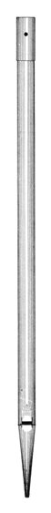
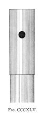

 
|
Keraulophon Greek Keraulophone Greek |
Authorities disagree as to the origin of this stop. According to Hopkins & Rimbault, the earliest source to mention it, it was invented by Gray & Davison and first used in 1843 in the organ of St. Paul's, Knightsbridge, London, England. Grove dates the invention of this stop-name from around 1920 by Gray, noting that this type of stop had long been known by other builders. Sumner, however, states that the name was occasionally used by German builders in the late 1700's for both flue and reed stops, and Wedgwood reports that in continental Europe it was a variety of Basset-Horn. Bonavia-Hunt describes it as a diminutive Horn Diapason, using holes instead of slots; Maclean calls it a Salicional with a hole at the top.
Audsley provides us with the best description of the Victorian Keraulophone, along with the illustrations reproduced here:
The pipes of the Keraulophone are cylindrical in form and of medium scale. The desirable maximum scale in the ratio 1:2.66 - halving on the eighteenth pipe - gives the CC pipe a diameter of 1.47 inches, and the c4 pipe a diameter of 0.34 inches. Smaller scales have been adopted by different builders, and are desirable when the stop is destined for an Echo Organ or a Chamber Organ: but too small a scale will destroy the characteristic tone of the stop, which should be round and rich. The mouth of the Keraulophone pipe should be one-fifth the circumference of the pipe in width, and about one-fourth its width in height. This latter proportion, however, depends on the wind-pressure - which should not exceed 3 1/2 inches - and the quality of the tone desired. The upper lip is straight and not cut sharp, being smoothly rounded, and the nicking of the languid is moderately fine. The mouth has ears of small projection and without any harmonic attachment. The characteristic feature of the pipe, and that which is the principal factor in the production of its special tone, is its perforated tuning-slide, as shown in [the accompanying illustration]. The length of the slide is about two and a half times its own diameter; and its perforation is made the distance of one diameter from its top edge, as indicated. In the CC pipe the diameter of the perforation should be 0.79 inch; in the C pipe 0.56; and regularly diminishing to 0.14 inch in the c4 pipe. Metal of good substance must be used for this stop; and Hoyt's Two-ply Pipe-Metal is highly suitable, being specially firm at moderate thicknesses.
The Keraulophone was popular during the second half of the 19th century; Locher (1888) reports that it was �much used in large new organs�. Wedgwood (1905) reports that the stop was rapidly becoming obsolete, Audsley (1921) laments its demise, and and by 1923 Bonavia-Hunt states that �the real article is not now made, the efect being produced by slotting a dulciana or salicional pipe�. The tone of the Keraulophone it most often described as �reedy� or �horny�. While most sources describe its tone as quiet, Irwin claims it to be moderately loud. The name comes from Greek words meaning �horn�, �pipe� and �voice�.
See also Kuerlofon, Kerophone, Corno di Caccia.
Osiris contains 38 examples, all at 8' pitch, only five of which are in organs built after 1890.
Keraulophone 8', Solo; St. Sulpice, Paris, France; Cavaillé-Coll 1862.
Keraulophone 8', Swell; Town Hall, Glasgow, Scotland; Gray & Davison 1853.
Keraulophon 8', manual; Lewis & Clark College, Portland, Oregon, USA; Erben 1851. (Relocated several times; original location unknown.)
Would you like to hear what a Keraulophone sounds like?
For as little as $10 (US), you can sponsor a page in this Encyclopedia, and help purchase more sound samples!
|
Original website compiled by Edward L. Stauff. For educational use only. Keraulophone.html - Last updated 30 April 2002. |
Home Full Index |